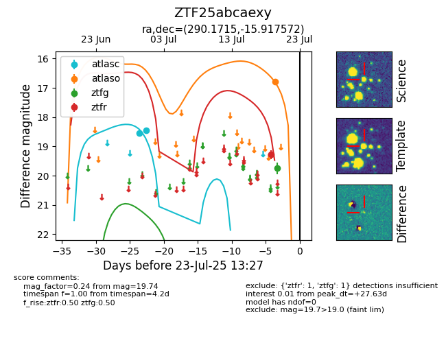

Target ZTF25abcaexy at 2025-07-23 13:27, see:
FINK: fink-portal.org/ZTF25abcaexy
Lasair: lasair-ztf.lsst.ac.uk/objects/ZTF25abcaexy
ALeRCE: alerce.online/object/ZTF25abcaexy
alt names
ZTF25abcaexy (ztf,fink)
coordinates:
equatorial (ra, dec) = (290.1715,-15.91757)
galactic (l, b) = (21.7661,-13.53168)
photometry
last atlasc=18.44, atlaso=16.80, ztfg=19.74, ztfr=19.28
2 atlasc, 1 atlaso, 1 ztfg, 1 ztfr detections
